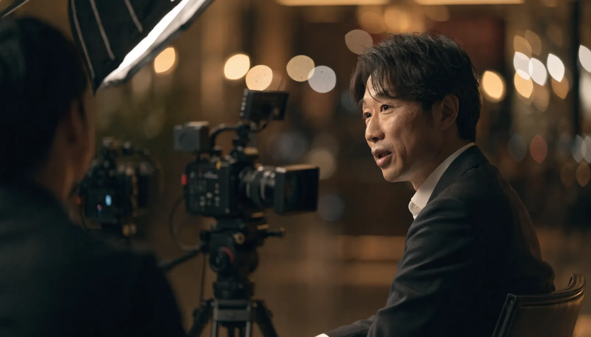

インタビュー動画 ｜ 東京 ｜ 撮影
人の「語り」ほど
強い説得力はありません
東京でインタビュー動画の撮影をお探しの方へ。株式会社NOKTOAは、社員・顧客・経営者の本音の言葉を引き出し、採用・PR・導入事例に効く映像に仕上げます。質問設計から撮影・編集まで自社完結。話すのが苦手な方からも、自然な語りを引き出します。

インタビュー動画とは
インタビュー動画とは、社員・顧客・経営者などへの質問と語りを軸に構成する動画です。本人の言葉と表情で伝えるため信頼性が高く、採用・PR・導入事例（お客様の声）など、人の説得力が効く場面で活用されます。
広告的に作り込まれた映像よりも、当事者が自分の言葉で語る姿のほうが、見る人の心に届くことがあります。なぜこの会社を選んだのか、入社して何が変わったのか、このサービスでどんな課題が解決したのか——一人称の語りには、ナレーションでは出せない生々しい説得力があります。
東京では多くの企業が同じような情報を発信しています。その中で差をつけるのは、データや実績そのものよりも、それを「誰が、どんな表情で語るか」です。インタビュー動画は、その人にしか語れない言葉を資産に変えます。
さらにインタビュー動画は、一度の撮影から多くの素材が生まれるのも利点です。本編の長尺版に加えて、印象的な一言を切り出した短尺版をSNS用に展開したり、文章に書き起こして採用サイトや記事に二次利用したりと、一つの語りを複数の形で活用できます。撮影の手間を考えると、費用対効果の高いコンテンツだと言えます。
逆に言えば、せっかく時間を割いて出演してもらうのですから、その場限りで終わらせず、どう展開するかまで見据えて設計することが大切です。NOKTOAは撮影前から活用先を想定し、無駄なく素材を活かす構成をご提案します。
インタビュー動画が効く3つの場面
結論：インタビュー動画は「信頼を得たい場面」で最も力を発揮します。
採用（社員インタビュー）
働く社員の本音は、どんな求人票よりも求職者の心を動かします。職場の空気や人柄が伝わり、入社後のミスマッチも減らせます。
導入事例（お客様の声）
「このサービスで成果が出た」という顧客の語りは、最も強力な営業材料です。検討中の見込み客の不安を、第三者の言葉で解消できます。
ブランド・PR（経営者インタビュー）
創業の想いや事業にかける哲学を経営者が語ることで、企業の世界観に深みが生まれ、ブランドへの共感を育てます。
いずれの場面でも共通するのは、「人の言葉だからこそ信じてもらえる」という点です。だからこそ、何を語ってもらうかの設計と、本音を引き出すディレクションが成果を左右します。
撮影の流れ
結論：良いインタビュー動画は、撮影当日ではなく「質問設計」で決まります。
ヒアリング・質問設計
動画の目的を定め、語ってほしい核心を引き出す質問をあらかじめ設計します。
事前準備・場所決め
東京都内の御社オフィスやスタジオなど、語りに集中できる環境を整えます。
撮影・対話ディレクション
当日は対話しながら緊張を解き、台本の棒読みではない自然な言葉を引き出します。
編集・納品
語りの中から最も伝わる部分を構成し、テロップや映像で補強して仕上げます。
話すのが得意でない方でも心配はいりません。私たちの役割は、上手に話してもらうことではなく、その人らしい本音を引き出すことです。事前の設計と当日の対話で、自然な語りを引き出します。
本音の語りを引き出す NOKTOAのこだわり
結論：インタビュー動画の質は、機材よりも「聞き方」で決まります。
同じ人物を撮っても、引き出せる言葉はインタビュアーの力量で大きく変わります。台本どおりの質問を順番に投げるだけでは、当たり障りのない答えしか返ってきません。私たちが大切にしているのは、相手が思わず本音を語りたくなる「場づくり」です。
核心に届く質問を、事前に設計する
「やりがいは何ですか」といった漠然とした問いではなく、「入社して一番心が動いた瞬間は」と具体的に尋ねることで、その人だけのエピソードが引き出せます。撮影前の質問設計に時間をかけるのは、このためです。
緊張をほどく対話から始める
カメラの前は誰でも緊張します。撮影は雑談から始め、本人がリラックスして自分の言葉で話せる状態を作ってから本題に入ります。良い表情と自然な語りは、安心感の中からしか生まれません。
語りの「間」や表情まで活かす
編集では、言葉そのものだけでなく、言いよどみや沈黙、ふとした笑顔といった非言語の瞬間も大切にします。完璧に整った映像よりも、人間味のある一瞬のほうが、見る人の心に深く届くからです。
こうした積み重ねが、「やらせ」に見えない、本物の説得力を持つインタビュー動画を生みます。話すのが苦手な方ほど、私たちにお任せいただく価値があります。映像の技術力はもちろん大切ですが、それ以上に、人の言葉を引き出す対話の設計こそが、インタビュー動画の成否を分ける本質だと私たちは考えています。
料金は 撮影の規模に合わせて設計します
インタビュー動画の費用は「一律いくら」ではありません。出演人数、撮影時間、企画の深さによって最適な構成が変わるからです。NOKTOAは決まったパッケージを売るのではなく、ご予算と目的を伺って、その範囲で最も成果が出る構成を逆算してご提案します。
スモールスタート
1名・短時間の撮影から。まず1本、語りの効果を試したい方に。
スタンダード
質問設計から入り、複数名を半日〜1日で撮影。バランス型の構成です。
フラッグシップ
複数拠点・多人数の撮影で、採用やブランドの基幹コンテンツに。
「この予算で何人撮れる？」というご相談こそ大歓迎です。まず1本から始めて、効果を見ながらシリーズ化する進め方もご提案します。誰にどんなテーマで語ってもらうかという企画の壁打ちから、無料でご一緒しますので、お気軽にお問い合わせください。
よくあるご質問
インタビュー動画とは何ですか？
社員・顧客・経営者などへの質問と語りを軸に構成する動画です。本人の言葉で伝えるため信頼性が高く、採用・PR・導入事例で活用されます。
インタビュー動画の撮影費用は東京でいくらですか？
1名・半日撮影で30〜60万円、複数名や企画込みで60〜120万円が一般的な目安です。NOKTOAはご予算と目的に合わせて構成をご提案します。
インタビューが苦手な人でも大丈夫ですか？
はい。事前の質問設計と当日の対話によるディレクションで、緊張を和らげながら自然な言葉を引き出します。話すのが得意でない方こそお任せください。
撮影は東京のどこまで対応できますか？
本社は世田谷区三軒茶屋。東京23区を中心に都内全域、近郊への出張撮影にも対応します。御社オフィスでの撮影も可能です。